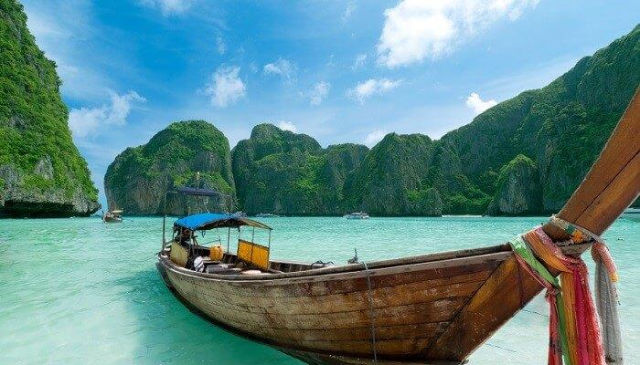
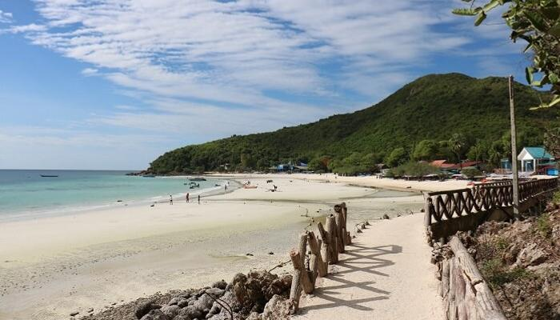
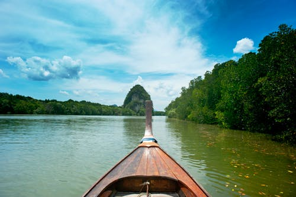
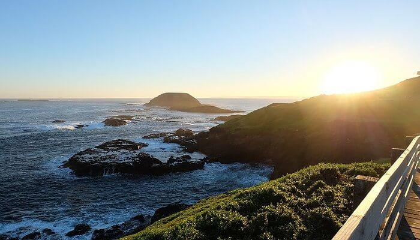

1 BANGKOK – Find Beauty In The Chaos
(Where to stay..)
The next place that should be mentioned in the list is Bangkok which is often called the ‘city of angels’. There would not be any single person in this whole world who would not know about Bangkok and the kind of life you get to experience here and shopping in Bangkok is the most exciting thing to do. The things that you experience here are unparalleled as compared to any other place in this whole world. The city is ranked among one of the most happening places of the world and there are enough reasons available to make you fall in love with the city. The experience that this place has to gift its visitors makes it a place that everyone must visit once in their lifetime and especially in the time of their youth
Best time to visit: November till early December
How to reach :
By air: is well connected by air to the rest of the world and there are two airports in the city. Buses to and from other parts of Thailand including Pattaya, Krabi, Phuket and Ko Samui and also to neighbouring countries operate in Bangkok.
Attractions: Shopping, Nightlife
2PHUKET – Beauty Personified
(Where to stay..)
Coming to Thailand means coming to the places that has all the charm and all the heat within it. Almost all the places in Thailand are beautiful and therefore it is said that the whole country is beauty personified and this is one of the best places to see in Thailand. So, among every other beautiful city that Thailand has, Phuket is the most popular one. This is the most visited place in Thailand. Phuket is known for the incredible night life that it offers to its tourists. You could also go bungee jumping in Thailand and scuba diving in Phuket for adrenaline boost.
Best time to visit: November to February
How to reach :
By air: The Phuket International Airport is the second busiest airport of Thailand after the Suvarnabhumi Airport in Bangkok.
Attractions: Nightlife, beaches and water sports
3.PATTAYA - The Party Hub!
(Where to stay..)
One of the best places to go in Thailand, Pattaya is Thailand’s party hub and the most happening destination that gets the tag of being a popular coastal city that offers a myriad watersports and nightlife options. Pattaya is ideal for bachelor and bachelorette parties, making friends and partying it up like there’s no tomorrow. The streets are all lined with fancy bars, beach shacks, bright neon lights, roadside eateries and cabaret shows, Pattaya is one of the best tourist places in Thailand.
Best time to visit: November to February
How to reach :
By air: The nearest airport to Pattaya is the U-Tapao Airport located 30 kilometres away from Pattaya at Sattahip and offers limited connectivity to a handful of destinations. Pattaya is well-connected to Bangkok by rail
Attractions:
Sanctuary of Truth, Jomtien Beach, Pattaya Floating Market, Mini Siam
4.KRABI – For The Most Surreal Sunsets
(Where to stay..)
One of the most famous tourist places in Thailand, Krabi is a popular beach destination with sublime views and surreal sunsets. This beach destination offers plenty of souvenir shops and has a certain charm that will sweep you off your feet and get you swooning, it is one of the best places to go in Thailand.
Best time to visit: November to April
How to reach :
By road: Direct buses to Krabi operate daily from the Southern Bus Terminal of Bangkok and take up to 10 hours to reach Krabi. There are also daily buses plying between Phuket and Krabi and take up to 3-4 hours to reach.
Attractions:Railay Beach, Tiger Cave Temple
5. Phi Phi Island – For White Sand Beaches
(Where to stay..)
Phi Phi islands consist of a group of six islands, that lie between the large island of Phuket and the Straits of Malacca coast of Thailand. These islands feature pristine beaches with glistening white sand and crystal clear blue waters. These islands also feature striking cliffs, thick forests and a beautiful shoreline that makes it one of the must visit places in Thailand.
Best time to visit: November to April
How to reach :
By sea: The ferry is by far the most popular method of reaching the islands. Ferries take about two hours from Phuket and 90 minutes from Krabi or Koh Lanta. The main departure/arrival port in Phuket is Rassada Pier, located in Phuket Town.
Attractions: Ko Phi Phi Lee, Ton Sai Beach, Bamboo Island, Monkey Beach